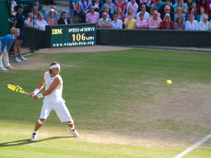
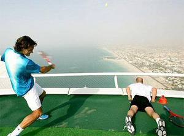

The Ladder of Gain¶
David Sammel¶

Winning one more set made Nadal Wimbledon champion.
Rafael Nadal is a fantastic competitor. If you listen to his interviews, he always speaks about working hard every day to improve.
Nadal always looks at what he can gain. He never thinks about what he has to lose, only at what he has to gain.
An example is his 5 set Wimbledon win over Roger Federer in 2008. In that match he had lead two sets to love and missed out on two match points. After the match a tennis writer asked how he overcame that \"disappointment.\"
His answer was this:
\"Disappointment? Are you crazy? I have only one more set to win. All my life I dream of winning Wimbledon and still the opportunity is so big! I focus on holding my serve and I know that if I can hold my serve then when we are maybe 3-3 Roger must know he must beat me. And this is difficult, no?\"
Nadal played to gain a Wimbledon title and he succeeded. But how does the average player acquire this mentality? How can you develop an attitude of GAIN?
My suggestion is to picture and understand the following. Visualize a ladder that you have to climb to the top of a 250 meter building. There is a resting platform every 30 meters.
Visualize a ladder to the top of the building.
Imagine that each match you play equates to one rung on the ladder. If you lose a match you remain in the same place - you lose nothing. Likewise with each set, game, or point.
As long as your goal is to improve then you can only go up the ladder. Every lost match simply means you have to keep working to improve so that you can gain a rung on the ladder. You can only gain a point, game, set or match.
The consequence of not winning is simply staying where you are on the ladder. You lose nothing.
The first thing most people would do is look up the ladder and the building to see how far and large the task will be. You see the goal. This in itself is daunting so sensibly you decide to focus on a process goal, which is to climb to the first 30 meter resting platform.
At the start you are fresh and there is very little outside pressure. The height is not yet a problem, in fact after 10-15 meters you can enjoy the view and even a bit of wind is hardly noticed or even welcome. Players with ability and good coaching tend to progress quickly at the lower levels and climbing is by and large fun.
As you climb higher up the ladder looking around too much can cause problems. You begin to compare yourself to other players and how far they are up their own ladders. You notice the wind and worry how it will feel higher up.

As you climb the ground can start to seem a long way down.
The grounds starts to seem a long way down. If your arms and legs feel a bit tired you wonder if you are strong enough. You may begin to feel isolated as friends get left behind. The solution is to narrow your focus on the next rung and nothing else until you've reached your target platform where you can take stock and fuel yourself for the next phase. Imagine you are connected to your coach and the world at large through an earpiece which can be adjusted and tuned into any frequency - as well limit any unproductive input.
As you get up to around 150 meters the method of coaching becomes increasingly important, and your discipline becomes crucial to your success. Your coach needs to help you understand the input, the choices, and the distractions and encourage you to focus on improving, and to keep working until you are capable of climbing to the next rung.
Whatever the score, do everything you can to gain the next point. If you can enough points you gain a game. Again, in the words of Rafael Nadal \"you just try to play tough and focus point for point. Sounds so boring but it's the right thing to do.\"
There is little value in focusing on how long you have been stuck on the same rung. The job is to get better and stronger. Every player faces obstacles and is tempted to quit, or go back down the ladder, or settle at one of the resting places.

Focus point to point: boring but right.
Do not fear or worry about other players who seem to be climbing faster than you. Progression is personal and quick progress does not mean it will continue at the same rate.
The rare exceptional talent who may reach dizzy heights quickly only to slow near the top is not your concern. Your target is not other people. Your target is the next rung on your ladder. Whether your goal is to be number one in the world or your club champion, it is your ladder to climb. You climb poorly when you do not concentrate fully on your own ladder and gain a good rhythm, whether it is with the speed of a tortoise or a hare.
Wind and rain will slow you down and make certain times miserable, cold, lonely and the slippery ladder can be scary as hell but persevere because the sun always returns.
Success can also cause fear of heights to kick in. 200 meters up can be very uncomfortable especially when you look down. It can be a lonely place because you know few people and of the people around you might seem unfriendly, seemingly wary of you, the new guy or girl gate crashing their party. They will test your resolve to stay with them. Again, the best answer is to work hard and keep focused on your climb.
The higher you get the greater the choice of frequency and with this comes the responsibility to choose widely. Who do you tune into?

Between stages take only an occasional glance down.
There are negative personalities on this journey up the ladder who voice their doubts. Ironically this could be friends, a coach, or parents, in fact anyone who you or their actions imply that have reached your potential: that the target is to high or that it's only other people with incredible luck or more talent who can climb to the top.
There are many who deliberately or inadvertently weaken your resolve by highlighting all the reasons why you can't make it. Avoid anyone who encourages you to stop, to enjoy the view, to forget about the next platform up or tries to limit you to the level of their own ambition.
The person can be close to you such as a girlfriend, boyfriend, or significant other who have different reasons to stop you such as resenting time apart or time spent practicing, making them feel like a second priority. They might fear losing you if you climb too high, to a place where they would feel uncomfortable and where your choices widen.
Apart from an odd glance there is no need to look down, or up, between stages. When you reach a rest area, enjoy the moment, replenish your strength, evaluate the next goal and without hanging around too long start the climb again, eyes firmly fixed on the next rung.
Even the greatest players struggle if their lives become complicated. It is extremely difficult to compete effectively if there are too many distractions. Tiger Woods was an example of a dominant force whose ability to perform was weakened due to the huge disruptions in his private life.

A dominant force can be weakened by disruptions in private life.
After significant success a real danger are the sycophants, people who tell you that you have made it, that the rest of the climb will be easy, that you can do other things and that your current support team may not appreciate the depth of your talent. They suggest changes by implying that although they have done a great job, you have outgrown their abilities. The underlying message is that they are in the know and can guide you to the big time with inner secrets.
A worse situation is if the team around you becomes intoxicated by the heights and join in the self-congratulations and distractions, no longer grounding and guiding you, fueling unrealistic expectations rather than a desire to work even harder to climb the last few rungs.
The top of the building is a wonderful achievement. However, many a successful person will tell you, although the view is fantastic and rewarding, quickly you notice there is a bridge you can cross to a larger tower and you have to decide whether to attempt to climb again, because if you don't someone else most certainly will. The focus and ability to keep improving is the key to reaching and remaining at high levels.
The climb is far easier if you tune into the encourage voices that support you, yet gently push you to improve. Focus and discipline will block the destructive voices. Keep it simple no matter where you are on the ladder. Gain the next point, the next game, the next set, and the next match.
|  | professional sport. He has spent 25 years |
| coaching international players, has been a | |
| national coach for the Lawn Tennis | |
| Association, and was named one of the world's | |
| top 50 coaches by Nike. He is the head coach | |
| of Team Bath-Monte Carlo Tennis Academy | |
| located at the University of Bath, Bath | |
| England. He is a regular contributor in | |
| British media and tennis commentary and an | |
| editor for Tennishead Magazine. | |
| link for | |
| More Information on the Academy |
|  | one of them has a certain aura and invincibility |
| in the way they present themselves in sport and | |
| to the world. Sometimes mistaken for arrogance, | |
| this self-belief is essential in succeeding in | |
| professional sport and in life in general too. | |
| The best believe they're the best and they make | |
| their opponents believe they're the best too. | |
| Locker Room Power: Building an Athlete's Mind, | |
| describes and examines David's coaching | |
| philosophy, which is drawn from his relentless | |
| drive to help people improve at their game, | |
| utilizing his vast experience, knowledge and | |
| understanding of the mental aptitude required to | |
| succeed as a professional sportsperson. | |
| [ to | |
| Order!](http://www.lockerroompower.com/buy-now/) |